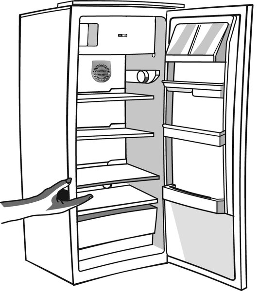

Обезскрежаване на фризера
Препоръчва се 1 или 2 пъти в годината или когато скрежът стане твърде дебел.
- Извадете храната и я увийте във вестник.
- Оставете вратата отворена, докато ледът се разтопи.
- Почистете с гъба, хладка вода и неутрален препарат.
- Изплакнете, подсушете и върнете храната.
- Включете уреда отново.
